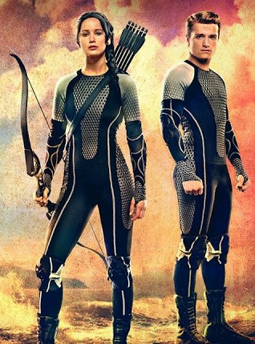

A nem túl távoli jövőben Amerika már a múlté, a helyén Panem országa található az azt irányító zsarnoki Kapitóliummal és tizenkét távoli körzetével. A történet közzéppontjában Katniss Everdeen áll, aki a 12-es körzetben él anyukájával és húgával, Primmel, apja korábban egy bányakatasztrófában meghalt. Van egy közeli barátja, Gale, akivel közösen vadásznak az erdőben, és kereskednek a levadászott állatokkal. Minden évben megrendezésre kerül az 'Éhezők Viadala' ahol 12-18 év közötti fiút és lányt választanak minden körzetből, hogy élet-halál harcot vívjanak egy arénában. Amikor Primet húzzák ki, Katniss önként jelentkezik helyette. A másik kiválasztott Peetah Mellark, a helyi pék fia. Katniss ezután elbúcsúzik családjától és Gale-től, majd felszáll a vonatra, ami a Kapitóliumba viszi a két kiválasztottat. Útközben megismerkednek leendő mentorukkal, Haymitch-csel, aki a tizenkettedik körzet egyedüli bajnoka.
Katniss Everdeen: Makacs, nagy igazságérzetű, önzetlen lány, aki nem barátkozik könnyen, de az Arénában összebarátkozik Rue-val, akit megölnek, és Katniss önzetlen megmozdulása miatt kitör a forradalom a körzetekben; nem akarnak több Viadalt. Ő egy jelképpé válik, később az emberek már csak úgy emlegetik, "a poszáta".
Peetah Mellark: Nem nagyon hisz abban, hogy győzni tudna az Arénában, szintén makacs, és szerelmes Katnissbe, akinek egyszer megmentette az életét. Peeta biztos abban, hogy Katniss nyeri a 74. éhezők viadalát.
